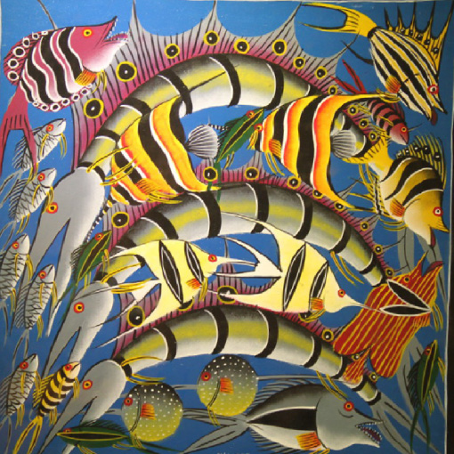
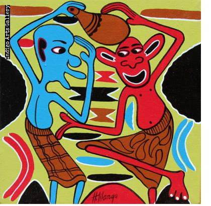

Figure 5.7: Samaki Tingatinga painting style: Paintings made by Tingatinga art style
Source: https://www.flickr.com/photos/101561334@N08/12521687334. Retrieved on 26th November 2022

Figure 5.8: Mashetani Tingatinga painting style
Source: https://commons.wikimedia.org/wiki/File:Rashidi-TT4785.jpg. Retrieved on 6th October 2023

Activity 5.3
Create a piece of painting based on the fish theme by using the Tingatinga painting style.